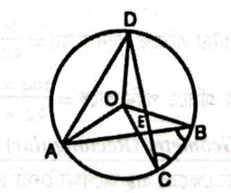

৫. ব্যতিক্রম (ত-বর্গ): ত-বর্গের সাথে যুক্ত হলে সর্বদা দন্ত্য 'ন' হয় (দৃষ্টান্ত, ক্রন্দন)।
জরুরি সমাস: আমরা = তুমি, আমি ও সে (নিত্য সমাস); তেমাথা = তিন মাথার সমাহার (দ্বিগু); চাঁদমুখ = মুখ চাঁদের ন্যায় (উপমিত কর্মধারয়); মনমাঝি = মন রূপ মাঝি (রূপক কর্মধারয়)।
💡 English Quick Booster
Usher in: সূচনা করা (Usher in an era of peace).
Beset with: জর্জরিত / পরিবেষ্টিত (The project is beset with problems).
Jump to/into conclusion: হুট করে সিদ্ধান্তে পৌঁছানো (Don't jump to a conclusion).
Run over: চাপা পড়া (Run over by a reckless vehicle).
Nip in the bud: অঙ্কুরে বিনষ্ট করা।
Beat about the bush: কাজের কথায় না গিয়ে ঘুরিয়ে কথা বলা।
Anything but: মোটেই না (He is anything but honest = সে আদৌ সৎ নয়)।
Grammar Tip:"on the committee" (not in), "economic condition" (financial, not economical).
বিগত বছরের প্রামাণ্য প্রশ্নব্যাংক ও ইন্টারঅ্যাক্টিভ কুইজ
অনুশীলন মোডে সমাধান দেখুন অথবা পরীক্ষা মোডে সময় মেপে নিজে মূল্যায়ন করুন
মূল্যায়ন স্কোর: ০ সঠিক | ০ আংশিক | ০ ভুল (মোট 44)
প্রশ্ন 01বাংলা | প্রবন্ধ রচনাপূর্ণমান: 20
যে কোনো একটি বিষয়ে প্রবন্ধ লিখুন: a) ডিজিটাল বাংলাদেশ b) ছিটমহল বিনিময় c) নারীর ক্ষমতায়ন ও বাংলাদেশ d) কারিগরি শিক্ষা
আত্মমূল্যায়ন:
💡 প্রামাণ্য সমাধান ও বিশদ ব্যাখ্যা দেখুন
নারীর ক্ষমতায়ন ও বাংলাদেশ
ভূমিকা: নারীর ক্ষমতায়ন বর্তমান বিশ্বের অন্যতম গুরুত্বপূর্ণ উন্নয়নমূলক বিষয়। একটি দেশের অগ্রগতি তখনই টেকসই হয়, যখন নারী ও পুরুষ সমানভাবে জাতীয় উন্নয়নে অংশগ্রহণের সুযোগ পায়। বাংলাদেশে নারীরা একসময় শিক্ষা, কর্মসংস্থান, অর্থনীতি ও সিদ্ধান্ত গ্রহণে নানা প্রতিবন্ধকতার সম্মুখীন হলেও বর্তমানে তাদের অবস্থার উল্লেখযোগ্য উন্নতি হয়েছে। রাষ্ট্র, সমাজ এবং বিভিন্ন উন্নয়ন সংস্থার সম্মিলিত উদ্যোগে নারীর ক্ষমতায়ন আজ জাতীয় উন্নয়নের অন্যতম ভিত্তিতে পরিণত হয়েছে। ফলে বাংলাদেশ আন্তর্জাতিক পরিমণ্ডলেও নারীর ক্ষমতায়নের ক্ষেত্রে একটি সফল উদাহরণ হিসেবে পরিচিতি লাভ করেছে।
নারীর ক্ষমতায়নের ধারণা: নারীর ক্ষমতায়ন বলতে নারীদের এমন সক্ষমতা অর্জনকে বোঝায়, যার মাধ্যমে তারা শিক্ষা, অর্থনীতি, রাজনীতি, সামাজিক জীবন এবং পারিবারিক সিদ্ধান্ত গ্রহণে স্বাধীনভাবে অংশগ্রহণ করতে পারে। এটি কেবল অর্থনৈতিক স্বাবলম্বিতার বিষয় নয়; বরং আত্মমর্যাদা, অধিকার প্রতিষ্ঠা, সমান সুযোগ এবং বৈষম্যহীন পরিবেশ নিশ্চিত করার একটি সামগ্রিক প্রক্রিয়া। একজন ক্ষমতায়িত নারী নিজের অধিকার সম্পর্কে সচেতন থাকেন, নিজের মতামত প্রকাশ করতে পারেন এবং সমাজের উন্নয়নে কার্যকর অবদান রাখতে সক্ষম হন।
বাংলাদেশে নারীর ক্ষমতায়নের অগ্রগতি: স্বাধীনতার পর থেকে বাংলাদেশে নারীর ক্ষমতায়নের ক্ষেত্রে উল্লেখযোগ্য পরিবর্তন ঘটেছে। প্রাথমিক ও মাধ্যমিক শিক্ষায় মেয়েদের অংশগ্রহণ বৃদ্ধি পেয়েছে এবং নারীশিক্ষার হার ধারাবাহিকভাবে উন্নত হয়েছে। সরকারি চাকরি, প্রশাসন, বিচার বিভাগ, শিক্ষা, স্বাস্থ্য, ব্যাংকিং, তথ্যপ্রযুক্তি এবং উদ্যোক্তা খাতসহ বিভিন্ন ক্ষেত্রে নারীরা সফলতার সঙ্গে কাজ করছেন। তৈরি পোশাক শিল্পে লক্ষ লক্ষ নারী কর্মসংস্থানের সুযোগ পেয়েছেন, যা দেশের অর্থনীতিতে গুরুত্বপূর্ণ অবদান রাখছে। এছাড়া স্থানীয় সরকার ও জাতীয় সংসদে নারীদের অংশগ্রহণ বৃদ্ধি পাওয়ায় সিদ্ধান্ত গ্রহণ প্রক্রিয়ায় তাদের ভূমিকা আরও শক্তিশালী হয়েছে।
জাতীয় উন্নয়নে নারীর অবদান: বাংলাদেশের অর্থনৈতিক ও সামাজিক উন্নয়নে নারীদের অবদান অত্যন্ত গুরুত্বপূর্ণ। কৃষি, শিল্প, ক্ষুদ্র ও মাঝারি উদ্যোগ, স্বাস্থ্যসেবা, শিক্ষা এবং তথ্যপ্রযুক্তিসহ বিভিন্ন খাতে নারীরা দক্ষতার পরিচয় দিচ্ছেন। প্রবাসী আয় বৃদ্ধিতে নারী কর্মীদেরও উল্লেখযোগ্য ভূমিকা রয়েছে। একই সঙ্গে পরিবারে শিক্ষিত ও সচেতন মা ভবিষ্যৎ প্রজন্মকে সুশিক্ষিত ও নৈতিক নাগরিক হিসেবে গড়ে তুলতে গুরুত্বপূর্ণ ভূমিকা পালন করেন। তাই নারীর ক্ষমতায়ন শুধু নারীর উন্নয়ন নয়; এটি একটি জাতির সামগ্রিক উন্নয়নের পূর্বশর্ত।
নারীর ক্ষমতায়নের পথে চ্যালেঞ্জ: উল্লেখযোগ্য অগ্রগতি সত্ত্বেও নারীর ক্ষমতায়নের পথে এখনও নানা প্রতিবন্ধকতা রয়েছে। বাল্যববিবাহ, যৌতুক, নারী নির্যাতন, কর্মক্ষেত্রে বৈষম্য, অসম মজুরি এবং সামাজিক কুসংস্কার অনেক ক্ষেত্রে নারীর অগ্রগতিকে বাধাগ্রস্ত করে। গ্রামীণ অঞ্চলের অনেক নারী এখনও মানসম্মত শিক্ষা, স্বাস্থ্যসেবা এবং প্রযুক্তিগত সুযোগ থেকে বঞ্চিত। এছাড়া সিদ্ধান্ত গ্রহণের উচ্চ পর্যায়ে নারীদের অংশগ্রহণ এখনও কাঙ্ক্ষিত মাত্রায় পৌঁছায়নি। এসব সমস্যা দূর না হলে প্রকৃত অর্থে নারীর ক্ষমতায়ন সম্ভব হবে না।
নারীর ক্ষমতায়নে করণীয়: নারীর ক্ষমতায়ন আরও জোরদার করতে হলে সর্বস্তরে মানসম্মত শিক্ষা নিশ্চিত করতে হবে এবং নারীদের জন্য নিরাপদ কর্মপরিবেশ গড়ে তুলতে হবে। বাল্যববিবাহ, যৌতুক ও নারী নির্যাতনের বিরুদ্ধে আইন কঠোরভাবে বাস্তবায়ন করতে হবে। নারীদের প্রযুক্তিগত শিক্ষা, দক্ষতা উন্নয়ন, উদ্যোক্তা প্রশিক্ষণ এবং সহজ ঋণ সুবিধা প্রদান করতে হবে। পাশাপাশি পরিবার ও সমাজে নারী-পুরুষের সমান মর্যাদা প্রতিষ্ঠা এবং নারীর প্রতি ইতিবাচক দৃষ্টিভঙ্গি গড়ে তুলতে গণসচেতনতা বৃদ্ধি করা জরুরি।
সরকার ও বিভিন্ন প্রতিষ্ঠানের ভূমিকা: বাংলাদেশ সরকার নারীর উন্নয়নে বিভিন্ন যুগোপযোগী কর্মসূচি গ্রহণ করেছে। নারী শিক্ষা সম্প্রসারণ, উপবৃত্তি প্রদান, ক্ষুদ্রঋণ কর্মসূচি, মাতৃত্বকালীন ভাতা, সামাজিক নিরাপত্তা কর্মসূচি এবং নারী উদ্যোক্তাদের জন্য বিশেষ সহায়তা নারীর ক্ষমতায়নে গুরুত্বপূর্ণ ভূমিকা পালন করছে। এছাড়া সরকারি ও বেসরকারি বিভিন্ন প্রতিষ্ঠান, উন্নয়ন সহযোগী সংস্থা এবং গণমাধ্যম নারীর অধিকার রক্ষা, সচেতনতা বৃদ্ধি এবং দক্ষতা উন্নয়নে কার্যকর ভূমিকা পালন করছে। এসব উদ্যোগের ফলে নারীরা সমাজে আরও আত্মবিশ্বাসী ও স্বাবলম্বী হয়ে উঠছেন।
উপসংহার: নারীর ক্ষমতায়ন ছাড়া কোনো দেশের টেকসই উন্নয়ন সম্ভব নয়। বাংলাদেশ ইতোমধ্যে এ ক্ষেত্রে উল্লেখযোগ্য সাফল্য অর্জন করেছে, তবে এখনও অনেক পথ অতিক্রম করতে হবে। শিক্ষা, কর্মসংস্থান, নিরাপত্তা, সমান অধিকার এবং সামাজিক মর্যাদা নিশ্চিত করা গেলে নারীরা জাতীয় উন্নয়নে আরও কার্যকর ভূমিকা রাখতে পারবেন। তাই সরকার, সমাজ, পরিবার এবং প্রতিটি নাগরিকের সম্মিলিত প্রচেষ্টায় নারী-পুরুষের সমঅধিকারভিত্তিক একটি বৈষম্যহীন সমাজ গড়ে তুলতে হবে। তখনই বাংলাদেশ একটি উন্নত, সমৃদ্ধ ও অন্তর্ভুক্তিমূলক রাষ্ট্র হিসেবে বিশ্বে আরও মর্যাদার সঙ্গে এগিয়ে যেতে সক্ষম হবে।
প্রশ্ন 02বাংলা | সারাংশ লিখনপূর্ণমান: 10
সারাংশ লিখুন: আমার বিশ্বাস, শিক্ষা কেউ কাউকে দিতে পারে না। সুশিক্ষিত লোক মাত্রই স্বশিক্ষিত। আজকের বাজারে বিদ্যাদাতার অভাব নাই। এমন কি, এ ক্ষেত্রে দাতা কর্ণেরও অভাব নেই; এবং আমরা আমাদের ছেলেদের তাদের দ্বারস্থ করেই নিশ্চিন্ত থাকি এই বিশ্বাসে যে, সেখান থেকে তারা একটা বিদ্যার ধন লাভ করে ফিরে আসবে যার সুদে তার বাকি জীবন আরামে কাটিয়ে দিতে পারবে। কিন্তু, এ বিশ্বাস নিতান্ত অমূলক। মনোরাজ্যেও দান গ্রহণ সাপেক্ষ, অথচ আমরা দাতার মুখ চেয়ে গ্রহীতার কথাটা একেবারেই ভুলে যাই। এ সত্য ভুলে না গেলে আমরা বুঝতাম যে, শিক্ষকের সার্থকতা শিক্ষা দান করার নয়, কিন্তু ছাত্রকে তা অর্জন করতে সক্ষম করায়।
আত্মমূল্যায়ন:
💡 প্রামাণ্য সমাধান ও বিশদ ব্যাখ্যা দেখুন
মূল ভাব / সারাংশ:
সুশিক্ষিত ব্যক্তিমাত্রই স্বশিক্ষিত। অপরের নিকট থেকেই শিক্ষা গ্রহণের ভাবনাটা মস্ত বড় ভুল। শুধু শিক্ষকের কাজ ছাত্রকে লেখাপড়ার কাজে সাহায্য করা, তার হৃদয়ে জ্ঞানের পিপাসা বৃদ্ধি করা এবং কৌতূহল সৃষ্টি করা। মানুষমাত্রই নিজে নিজের শিক্ষক। জ্ঞানের ব্যাপারে শিক্ষক সহায়ক মাত্র।
প্রশ্ন 03বাংলা | পত্র লিখনপূর্ণমান: 10
পত্র লিখুন: a) বাংলাদেশের মুক্তিযুদ্ধের সঠিক ইতিহাস জানার জন্য ছোট বোনকে উৎসাহ যুগিয়ে একটি পত্র লিখুন। অথবা, b) 'সকল স্তরের শিক্ষকের আইসিটি প্রশিক্ষণ প্রয়োজন' এই শিরোনামে বন্ধুকে একটি পত্র লিখুন।
আত্মমূল্যায়ন:
💡 প্রামাণ্য সমাধান ও বিশদ ব্যাখ্যা দেখুন
২০ ফেব্রুয়ারি, ২০২৬ ফরিদপুর
প্রিয় সুমাইয়া,
স্নেহ নিও। আশা করি তুমি ভালো আছ। আমিও আল্লাহর রহমতে ভালো আছি। আজ তোমাকে একটি গুরুত্বপূর্ণ বিষয়ে লিখছি।
তুমি জানো, বাংলাদেশের মুক্তিযুদ্ধ আমাদের জাতীয় জীবনের সবচেয়ে গৌরবোজ্জ্বল ঘটনা। ১৯৭১ সালে দীর্ঘ নয় মাসের রক্তক্ষয়ী যুদ্ধের মাধ্যমে আমরা স্বাধীনতা অর্জন করি। লাখো শহিদের আত্মত্যাগ এবং অসংখ্য মুক্তিযোদ্ধার বীরত্বের বিনিময়ে আমাদের এই স্বাধীনতা এসেছে। তাই একজন সচেতন নাগরিক হিসেবে মুক্তিযুদ্ধের সঠিক ইতিহাস জানা আমাদের নৈতিক দায়িত্ব।
আমি তোমাকে মুক্তিযুদ্ধের ইতিহাস মনোযোগ দিয়ে পড়ার জন্য উৎসাহিত করছি। এ বিষয়ে নির্ভরযোগ্য বই, পত্র-পত্রিকা ও গবেষণামূলক লেখা পড়তে পারো। পাশাপাশি মুক্তিযুদ্ধভিত্তিক প্রামাণ্যচিত্র দেখতে পারো এবং সুযোগ পেলে মুক্তিযুদ্ধ জাদুঘর পরিদর্শন করতে পারো। এতে তুমি দেশের ইতিহাস, ঐতিহ্য ও স্বাধীনতার প্রকৃত মূল্য সম্পর্কে জানতে পারবে।
মুক্তিযুদ্ধের সঠিক ইতিহাস জানা তোমার মধ্যে দেশপ্রেম, মানবিক মূল্যবোধ ও জাতীয় চেতনা জাগ্রত করবে। তাই এখন থেকেই এ বিষয়ে আগ্রহী হও এবং নিয়মিত পড়াশোনা করো।
আজ আর নয়। আব্বা-আম্মাকে আমার সালাম দিও। তোমার জন্য অনেক শুভকামনা রইল।
বাংলায় অনুবাদ করুন: It is the responsibility of human beings to prevent the environment from being spoilt. To make life healthy and comfortable we should keep the environment clean and danger free. But often people spoil the environment by doing unwise things and as a result, endanger their own lives.
আত্মমূল্যায়ন:
💡 প্রামাণ্য সমাধান ও বিশদ ব্যাখ্যা দেখুন
প্রমিত বঙ্গানুবাদ:
পরিবেশকে ধ্বংসের হাত থেকে রক্ষা করার একমাত্র দায়িত্ব মানব জাতির। জীবনকে সুস্থ ও আরামদায়ক করতে পরিবেশকে পরিষ্কার ও বিপদমুক্ত রাখা উচিত। কিন্তু, মানুষ প্রায়ই জ্ঞানহীনের মতো পরিবেশকে নষ্ট করছে। ফলে তাদের জীবনকেই বিপদের মধ্যে ফেলে দিচ্ছে।
প্রশ্ন 05বাংলা | বাংলা ব্যাকরণপূর্ণমান: 15
যে কোনো তিনটি প্রশ্নের উত্তর লিখুন: a) পাঁচটি ণ-ত্ব বিধান লিখুন। b) উৎস অনুসারে শব্দের শ্রেণিকরণ করুন। c) ব্যাসবাক্যসহ সমাসের নাম লিখুন: আমরা, তেমাথা, চাঁদমুখ, মনমাঝি, আম-কাঁঠাল। d) শুদ্ধ করে লিখুন: মুমুর্ষ, দন্দ্ব, শ্রদ্ধাঞ্জলী, সমিচিন, প্রতিযোগীতা। e) প্রত্যয়ের নামসহ প্রকৃতি-প্রত্যয় নির্ণয় করুন: ঢাকাই, পিপাসা, দাতা, ঐতিহাসিক, নায়ক।
আত্মমূল্যায়ন:
💡 প্রামাণ্য সমাধান ও বিশদ ব্যাখ্যা দেখুন
(a) পাঁচটি ণ-ত্ব বিধান:
ঋ, র, ষ এই তিনটি বর্ণের পর তৎসম শব্দের দন্ত্য 'ন' মূর্ধন্য 'ণ' হয়। যেমন: ঋণ, ঘৃণা, রণ, বর্ণ ইত্যাদি।
ঋ, র, ষ এর পর স্বরবর্ণ, ক-বর্গ, প-বর্গ, য, হ অথবা ং (অনুস্বার) থাকলে তার পরবর্তী দন্ত্য 'ন' মূর্ধন্য 'ণ' হয়। যেমন: লক্ষণ, ভক্ষণ, রেণু, পাষাণ ইত্যাদি।
ট বর্গের পূর্বে দন্ত্য 'ন' মূর্ধন্য 'ণ' হয়। যেমন: বণ্টন, লুণ্ঠন, কাণ্ড ইত্যাদি।
প্র, পরা, পরি, নির্ এই চারটি উপসর্গের পরবর্তী দন্ত্য 'ন' মূর্ধন্য 'ণ' হবে। যেমন: প্রণাম, প্রমাণ, পরায়ণ, পরিণতি ইত্যাদি।
ত, থ, দ, ধ এর পূর্বে সংযুক্ত বর্ণে দন্ত্য 'ন' হয়, 'ণ' হয় না। যেমন: দৃষ্টান্ত, বৃন্ত, গ্রন্থ, ক্রন্দন, বন্ধন ইত্যাদি।
(b) উৎস অনুসারে শব্দের শ্রেণিকরণ:
উৎপত্তি বা উৎস অনুসারে বাংলা ভাষার শব্দভাণ্ডারকে ৫ ভাগে ভাগ করা হয়েছে:
ক. তৎসম শব্দ: সংস্কৃত ভাষার যেসব শব্দ পরিবর্তিত না হয়ে সরাসরি বাংলা ভাষায় গৃহীত হয়েছে। যেমন: চন্দ্র, সূর্য, নক্ষত্র, ভবন, ধর্ম, পাত্র, মনুষ্য।
খ. তদ্ভব শব্দ: যেসব শব্দ সংস্কৃত থেকে প্রাকৃত ভাষার মধ্য দিয়ে বিবর্তিত হয়ে বাংলায় এসেছে। যেমন: হস্ত > হত্থ > হাত; চন্দ > চন্দ > চাঁদ।
গ. অর্ধ-তৎসম শব্দ: যেসব সংস্কৃত শব্দ কিঞ্চিৎ পরিবর্তিত আকারে বাংলায় ব্যবহৃত হয়। যেমন: গিন্নি, বোষ্টম, কুচ্ছিত, ছেরাদ্দ, জোছনা।
ঙ. বিদেশি শব্দ: political, religious or trade reasons-এ বিদেশি ভাষা থেকে আগত শব্দ। যেমন: দারোগা, বেহেশত, গুনাহ, পাঞ্জাবি, রিকশা।
(c) ব্যাসবাক্যসহ সমাস:
সমস্ত পদ
ব্যাসবাক্য
সমাসের নাম
আমরা
তুমি, আমি ও সে
নিত্য সমাস / একশেষ দ্বন্দ্ব
তেমাথা
তে (তিন) মাথার সমাহার
দ্বিগু সমাস
চাঁদমুখ
মুখ চাঁদের ন্যায়
উপমিত কর্মধারয়
মনমাঝি
মন রূপ মাঝি
রূপক কর্মধারয়
আম-কাঁঠাল
আম ও কাঁঠাল
দ্বন্দ্ব সমাস
(d) বানান শুদ্ধিকরণ:
অশুদ্ধ রূপ
শুদ্ধ রূপ
নিয়ম / ব্যাখ্যা
মুমুর্ষ
মুমূর্ষু
হ্রস্ব উ, দীর্ঘ ঊ, হ্রস্ব উ ক্রম
দন্দ্ব
দ্বন্দ্ব
দ-ব ও দ-ব ফলা যুক্ত
শ্রদ্ধাঞ্জলী
শ্রদ্ধাঞ্জলি
'অঞ্জলি' যুক্ত শব্দে হ্রস্ব ই-কার হয়
সমিচিন
সমীচীন
উভয় বর্ণেই দীর্ঘ ঈ-কার
প্রতিযোগীতা
প্রতিযোগিতা
-তা প্রত্যয় যুক্ত হলে হ্রস্ব ই-কার হয়
(e) প্রকৃতি ও প্রত্যয় নির্ণয়:
শব্দ
প্রকৃতি ও প্রত্যয়
প্রত্যয়ের নাম
ঢাকাই
ঢাকা + আই
তদ্ধিত প্রত্যয়
পিপাসা
√পিপাস্ + অ + আ
কৃৎ প্রত্যয়
দাতা
√দা + তৃ (তৃচ্)
কৃৎ প্রত্যয়
ঐতিহাসিক
ইতিহাস + ইক
তদ্ধিত প্রত্যয়
নায়ক
√নী + অক (ণক)
কৃৎ প্রত্যয়
প্রশ্ন 06English | Essay Writingপূর্ণমান: 20
Write an essay on any one of following topics: a) The Life of a Garments Worker: [Hints: Introduction - His/her living condition - His/her life at the factory - How he/she helps the economy - Measures to be adopted for their welfare - Conclusion] b) The Man You Admire Most: [Hints: Introduction - The reasons influenced you - How he can influence society - Conclusion] c) Man and Trees: [Hints: Introduction - Trees, a gift of nature - Trees, a source of income - Trees and soil erosion, air pollution - Danger of indiscriminate cutting of trees - Conclusion]
আত্মমূল্যায়ন:
💡 প্রামাণ্য সমাধান ও বিশদ ব্যাখ্যা দেখুন
Man and Trees
Introduction: Trees have very much importance because they make the earth fit for the existence of humans and other living organisms. They provide us with air to breathe, food to eat, and shelter to live, and play a major role in keeping us alive and providing a comfortable life. We should plant more and more trees to ensure a clean and green environment and to promote healthy living. Trees are our life's companions; they make us live by absorbing carbon dioxide and providing oxygen. If there were no trees, then life on earth would not have been possible.
Trees: A Gift of Nature: Today it is a matter of great irony that we are bent upon destroying the trees that are giving us life. If we have to save the Earth, then more and more trees have to be planted. Trees are a precious gift of nature; due to the trees, this green earth and our life is happy. Trees are true warriors who fight pollution for us right from birth and give us clean and beautiful environment. Trees have been on our earth for thousands of years; they cannot move but can breathe like humans. Trees absorb toxic carbon dioxide and provide pure oxygen to us. Trees give fruits and grains for us to eat throughout our life, rain is also due to which we get water to drink, clothes, wood for fuel, paper, rubber, herbs for curing diseases. During rainy days, soil erosion is prevented, leaves of trees make the land fertile, trees give other animals an equal place to live and other valuable mineral wealth is also given by them. But gradually since industrialization and urbanization has increased, the trees have been indiscriminately harvested by humans, due to which the natural balance of the earth has been disturbed.
Environmental Significance & Benefits:
Trees make the environment clean and beautiful.
Trees provide clean oxygen to us by absorbing contaminated and poisonous carbon dioxide and other gases from our atmosphere.
Where there is a large amount of trees, there is also a small amount of noise pollution because the density of the trees does not allow the noise to spread.
Wherever trees exist in large quantities, there is no erosion of the land and with the help of these, the acidity of the land also decreases.
We get organic manure from the dry leaves of trees, which makes the land fertile.
Trees provide us cool shade in summer.
Due to trees, the atmosphere changes from time to time, maintaining the climatic equilibrium of the earth.
We get flowers, fruits, rubber, lacquer, silk, paper, matchmaking, wood, herbs and other substances from trees.
Trees prevent floods by stopping excessive water flow and facilitating groundwater recharge.
Due to trees, our wildlife habitat remains safe and flourishing.
Due to trees, every place gets the right amount of rain, providing potable sweet water for crops.
Danger of Indiscriminate Cutting of Trees: Due to lack of trees in cities, there is less rainfall and air pollution remains in greater quantity. If the cutting of trees continues at this speed, then the day is not far when the Earth will face catastrophic desertification. Trees are the lifeguards of all beings. The tree is our valuable asset; if we continue to exploit it, then this wealth will end and our life will also end. We have to understand the importance of trees because they are the protectors of whole nature. Without these, the earth will become just a dry and barren planet.
Conclusion: Therefore, we have to increase the number of trees by becoming aware of today, our environment and life can continue to run smoothly. Afforestation and reforestation must be embraced by every citizen as a sacred national duty.
প্রশ্ন 07English | Letter Writingপূর্ণমান: 10
Write a letter to your friend describing a football match you have enjoyed recently. OR, Write a letter to the editor of an English daily complaining about frequent power failure in your area.
আত্মমূল্যায়ন:
💡 প্রামাণ্য সমাধান ও বিশদ ব্যাখ্যা দেখুন
04 July, 2026
The Editor
The Daily New Age
Sonargaon Road, Dhaka-1205
Sir,
I shall be highly glad if you kindly publish the following letter in your popular daily.
The people of Shahjahanpur area in Dhaka have been suffering greatly from load shedding for a long time. The failure of electricity has become a regular affair. All classes of people are the victims of it. The students cannot study without electricity. Mills and factories cannot run during load-shedding. Crimes also take place in the darkness.
We, therefore, draw the attention of the authority concerned to take necessary steps so that the people can get rid of their sufferings as early as possible.
Bashar 1/15, Shahjahanpur, Dhaka
From: Bashar 1/15, Shahjahanpur, Dhaka
To: The Editor The Daily New Age, Sonargaon Road, Dhaka-1205
Read the following passage and answer the questions that follow: People moan about poverty as a great evil and it seems to be an accepted belief that people would be happy and more out of life if they had plenty of money. However there is more genuine satisfaction in life and more retained from life in the humble cottage of the poor than in the palace of the rich. I always pity the sons and daughters of the rich, who are attended by servants. It is because I know how sweet and pure the home of honest poverty is, how free its inmates are from envies and jealousies and how they are loving and united in the common interest of supporting the family. It is for these reasons that from the ranks of the poor so many young eminent self reliant men have always sprung and will spring. It seems to be a matter of universal desire that poverty should be abolished. However, to abolish honest, industrious and self-denying poverty would be to destroy the soil upon which mankind produces the virtues that will enable our race to reach a still higher civilization than it now possesses.
Questions: a) What do people generally think about poverty? b) What is the author's opinion about it? c) Why according to the author do eminent persons come from a poor family? d) What will happen if poverty is abolished? e) What will be suitable title for this passage?
আত্মমূল্যায়ন:
💡 প্রামাণ্য সমাধান ও বিশদ ব্যাখ্যা দেখুন
প্যাসেজের সারসংক্ষেপ ও ভাবানুবাদ: লোকজন দারিদ্র্যকে একটি বড় অভিশাপ মনে করে এবং ধারণা করে যে ধন-দৌলত ছাড়া সুখী হওয়া যায় না। কিন্তু কুঁড়েঘরে থেকেও যে গভীর আত্মতৃপ্তি ও পারিবারিক বন্ধন পাওয়া যায়, তা রাজপ্রাসাদেও মেলে না। সৎ দারিদ্র্যের পরিবার হিংসা-দ্বেষমুক্ত, স্নেহশীল ও একতাবদ্ধ থাকে। এ কারণেই দরিদ্র পরিবার থেকে বহু আত্মনির্ভরশীল ও প্রতিভাবান মানুষ জন্ম নেয়। যদি এই সৎ ও পরিশ্রমী দারিদ্র্য ধ্বংস হয়, তবে মানুষের নৈতিক গুণাবলি বিকাশের ভিতই বিনষ্ট হতে পারে।
What do people generally think about poverty? Answer: People generally think about poverty as a great evil and curse, believing that happiness in life depends entirely on having plenty of money.
What is the author's opinion about it? Answer: The author opines that there is more genuine satisfaction, peace, and pure happiness in the humble cottage of the poor than in the luxurious palaces of the rich.
Why according to the author do eminent persons come from a poor family? Answer: Eminent persons come from poor families because the inmates of honest poverty are free from envy and jealousy, are hardworking, self-denying, and united in loving support, which builds strong character and self-reliance.
What will happen if poverty is abolished? Answer: According to the author, abolishing honest, industrious, and self-denying poverty would destroy the very fertile soil upon which human virtues and higher civilizational qualities flourish.
What will be a suitable title for this passage? Answer:"The Virtues of Honest Poverty" or "Poverty: Coming from Darkness to Light".
Fill in the blanks with appropriate prepositions (any five): a) These measures will usher ___ an era of progress. b) The transferred officer will take ___ soon. c) The slums are beset ___ problems. d) You should not jump ___ a conclusion. e) Don't laugh ___ the lame man. f) The boy was run ___ by a car.
আত্মমূল্যায়ন:
💡 প্রামাণ্য সমাধান ও বিশদ ব্যাখ্যা দেখুন
Sentence with Blank
Correct Preposition
পূর্ণাঙ্গ বাক্য ও বঙ্গানুবাদ
a) These measures will usher ___ an era of progress.
in
These measures will usher in an era of progress. (পদক্ষেপটি উন্নয়নের নব দিগন্ত উন্মোচন করবে।)
b) The transferred officer will take ___ soon.
off / over
The transferred officer will take off soon. (বদলীকৃত কর্মকর্তা শীঘ্রই প্রস্থান করবেন।) / take over (দায়িত্ব নেবেন)।
c) The slums are beset ___ problems.
with
The slums are beset with problems. (বস্তিগুলো নানাবিধ সমস্যায় জর্জরিত।)
d) You should not jump ___ a conclusion.
into / to
You should not jump into (or to) a conclusion. (তোমার তাড়াহুড়ো করে কোনো সিদ্ধান্তে পৌঁছানো উচিত নয়।)
e) Don't laugh ___ the lame man.
at
Don't laugh at the lame man. (খোঁড়া লোকটিকে উপহাস বা অবজ্ঞা করো না।)
f) The boy was run ___ by a car.
over
The boy was run over by a car. (ছেলেটি গাড়ি চাপা পড়েছিল।)
প্রশ্ন 10English | Idioms & Phrasesপূর্ণমান: 5
Make sentences with the following phrases and idioms: a) Nip in the bud b) Spare no pains c) Anything but d) Beat about the bush e) Lame excuse
আত্মমূল্যায়ন:
💡 প্রামাণ্য সমাধান ও বিশদ ব্যাখ্যা দেখুন
Idiom & Phrase
বাংলা অর্থ
Meaning in English
Exemplary Sentence
a) Nip in the bud
অঙ্কুরে বিনষ্ট করা
Destroy at an early stage
We must nip this evil problem in the bud before it becomes uncontrollable.
b) Spare no pains
সম্ভাব্য সকল চেষ্টা করা
Make every possible effort
Karim spared no pains to win the prestigious scholarship.
c) Anything but
মোটেই না / আদৌ নয়
By no means / Not at all
His explanatory statement seems anything but true.
d) Beat about the bush
মূল বিষয়ে না গিয়ে অপ্রাসঙ্গিক কথা বলা
Avoid talking about the main topic
Stop beating about the bush and come straight to the point.
e) Lame excuse
বাজে ওজর / দুর্বল অজুহাত
An unconvincing explanation
This time your lame excuse will not be accepted by the authority.
প্রশ্ন 11English | Sentence Correctionপূর্ণমান: 5
Correct the following sentences: a) His economical condition is bad. b) There are five members in the committee. c) Do you know where does he live? d) Have you a Television? e) I get up before the sunrise.
আত্মমূল্যায়ন:
💡 প্রামাণ্য সমাধান ও বিশদ ব্যাখ্যা দেখুন
Incorrect Sentence
Correct Sentence
ব্যাকরণগত ব্যাখ্যা ও অর্থ
a) His economical condition is bad.
His economic condition is bad.
'Economical' মানে সাশ্রয়ী বা মিতব্যয়ী; আর্থিক অবস্থা বোঝাতে 'Economic' ব্যবহৃত হয়। (অর্থ: তার আর্থিক অবস্থা খারাপ।)
b) There are five members in the committee.
There are five members on the committee.
কমিটির সদস্য বোঝাতে preposition হিসেবে 'on' বসে। (অর্থ: কমিটিতে ৫ জন সদস্য আছেন।)
c) Do you know where does he live?
Do you know where he lives?
Embedded question বা indirect question-এ WH-word এর পর assertive গঠন (Subject + Verb) হয়, auxiliary 'does' বাদ যায়। (অর্থ: আপনি কি জানেন তিনি কোথায় থাকেন?)
d) Have you a Television?
Do you have a television?
আধুনিক ইংরেজিতে অধিকার বোঝাতে auxiliary 'Do' ব্যবহার করে প্রশ্ন করা হয়। (অর্থ: আপনার কি কোনো টেলিভিশন আছে?)
e) I get up before the sunrise.
I get up before sunrise.
'Sunrise' বা 'sunset' প্রাকৃতিক সময়ের পূর্বে 'the' বসে না। (অর্থ: সূর্যোদয়ের পূর্বেই আমি ঘুম থেকে উঠি।)
করিম একটি কাজের \(\frac{১}{৬}\) অংশ ৮ দিন করে চলে গেল। তারপর রহিম কাজে যোগ দিল এবং সে ৫ দিন কাজ করে কাজ ত্যাগ করল। বাকি কাজ করিম ১২ দিনে শেষ করল। রহিম একা সম্পূর্ণ কাজটি কত দিনে করতে পারত?
আত্মমূল্যায়ন:
💡 প্রামাণ্য সমাধান ও বিশদ ব্যাখ্যা দেখুন
সমাধান:
করিম ৮ দিনে করে কাজটির \(\frac{১}{৬}\) অংশ।
\(\therefore\) করিম ১ দিনে করে কাজটির \(\frac{১}{৬ \times ৮} = \frac{১}{৪৮}\) অংশ।
অতএব, করিম পরবর্তীতে ১২ দিনে করে কাজটির:
$$\frac{১ \times ১২}{৪৮} = \frac{১}{৪} \text{ অংশ}$$
সুতরাং করিম প্রথম ও শেষ দফায় মোট কাজ করেছে:
$$\frac{১}{৬} + \frac{১}{৪} = \frac{২ + ৩}{১২} = \frac{৫}{১২} \text{ অংশ}$$
এই বাকি অংশ রহিম ৫ দিনে সম্পন্ন করে।
সুতরাং রহিম ৫ দিনে করে কাজটির \(\frac{৭}{১২}\) অংশ।
\(\therefore\) রহিম ১ দিনে করে কাজটির \(\frac{৭}{১২ \times ৫} = \frac{৭}{৬০}\) অংশ।
অতএব, রহিম একা সম্পূর্ণ ১টি কাজ করতে পারবে:
$$\frac{১}{\frac{৭}{৬০}} = \frac{৬০}{৭} = ৮\frac{৪}{৭} \text{ দিনে}$$
বইয়ের মুদ্রিত নোট ও বিকল্প হিসাব: মূল মুদ্রিত বইতে করিমের ১২ দিনের কাজকে অসাবধানতাবশত \(\frac{১ \times ১২}{৮ \times ৩} = \frac{১}{২}\) এবং করিমের মোট কাজকে \(\frac{১}{৬} + \frac{১}{২} = \frac{৫}{৬}\) অংশ ধরা হয়েছিল। সেই হিসাব অনুযায়ী বাকি থাকে \(১ - \frac{৫}{৬} = \frac{১}{৬}\) অংশ। রহিম ৫ দিনে \(\frac{১}{৬}\) অংশ করলে সম্পূর্ণ কাজটি \(৫ \times ৬ = ৩০\) দিনে করতে পারে। পরীক্ষার হলে প্রদত্ত বিকল্প উত্তরের ভিত্তিতে \(৮\frac{৪}{৭}\) দিন (বিশুদ্ধ গাণিতিক সমাধান) অথবা ৩০ দিন (মুদ্রিত সমাধান) উভয়টিই বিবেচনায় রাখা যুক্তিযুক্ত।
উত্তর: \(৮\frac{৪}{৭}\) দিনে (মুদ্রিত বইয়ের বিকল্প হিসাবে ৩০ দিনে)।
প্রশ্ন 13গণিত | শতকরা ও মুনাফা (Percentage & Interest)পূর্ণমান: 10
১০% হারে কত টাকার ৮ বছরের মুনাফা ৪,০০০ টাকার ৪% হারে ৭ বছরের মুনাফার সমান হবে?
আত্মমূল্যায়ন:
💡 প্রামাণ্য সমাধান ও বিশদ ব্যাখ্যা দেখুন
সমাধান:
দ্বিতীয় ক্ষেত্র থেকে মুনাফা নির্ণয়:
দেওয়া আছে, আসল \(P_2 = ৪,০০০\) টাকা
মুনাফার হার \(r_2 = ৪\% = \frac{৪}{১০০}\)
সময় \(n_2 = ৭\) বছর
\(\therefore\) মুনাফা \(I_2 = P_2 \times r_2 \times n_2 = ৪০০০ \times \frac{৪}{১০০} \times ৭ = ১,১২০\) টাকা।
প্রথম ক্ষেত্রে আসল নির্ণয়:
প্রশ্নমতে, প্রথম ক্ষেত্রের মুনাফা \(I_1 = I_2 = ১,১২০\) টাকা
মুনাফার হার \(r_1 = ১০\% = \frac{১০}{১০০}\)
সময় \(n_1 = ৮\) বছর
ধরি, আসল \(= P_1\) টাকা।
প্রশ্ন 14গণিত | গতিবেগ ও দূরত্ব (Train & Speed)পূর্ণমান: 10
২৪০ মিটার দীর্ঘ একটি রেলগাড়ি ২০০ মিটার দীর্ঘ একটি প্ল্যাটফর্ম ১ মিনিটে অতিক্রম করে। ঘণ্টায় গাড়িটির গতিবেগ কত?
আত্মমূল্যায়ন:
💡 প্রামাণ্য সমাধান ও বিশদ ব্যাখ্যা দেখুন
সমাধান:
প্ল্যাটফর্ম অতিক্রম করতে রেলগাড়িটিকে নিজের দৈর্ঘ্য ও প্ল্যাটফর্মের দৈর্ঘ্যের সমষ্টির সমান দূরত্ব অতিক্রম করতে হয়।
\(\therefore\) মোট দূরত্ব \(= ২৪০ + ২০০ = ৪৪০\) মিটার।
দেওয়া আছে,
১ মিনিট \(= ৬০\) সেকেন্ড।
রেলগাড়িটি ১ মিনিটে অতিক্রম করে ৪৪০ মিটার।
\(\therefore\) ৬০ মিনিট বা ১ ঘণ্টায় অতিক্রম করে:
$$৪৪০ \times ৬০ = ২৬,৪০০ \text{ মিটার}$$
প্রশ্ন 15গণিত | মিশ্রণ ও শতকরা (Mixture & Percentage)পূর্ণমান: 10
শতকরা ১১ ভাগ পানি মিশ্রিত ১ লিটার এসিড ৭% পানি মিশ্রিত ৩ লিটার এসিডে মেশানো হলো। নতুন মিশ্রণে পানির শতকরা হার কত?
আত্মমূল্যায়ন:
💡 প্রামাণ্য সমাধান ও বিশদ ব্যাখ্যা দেখুন
সমাধান:
প্রথম দ্রবণে পানির পরিমাণ:
১০০ লিটার এসিড দ্রবণে পানি আছে ১১ লিটার।
\(\therefore\) ১ লিটার এসিড দ্রবণে পানি আছে \(= \frac{১১}{১০০}\) লিটার।
দ্বিতীয় দ্রবণে পানির পরিমাণ:
১০০ লিটার এসিড দ্রবণে পানি আছে ৭ লিটার।
\(\therefore\) ৩ লিটার এসিড দ্রবণে পানি আছে \(= \frac{৩ \times ৭}{১০০} = \frac{২১}{১০০}\) লিটার।
নতুন মিশ্রণে মোট পরিমাণ:
মোট মিশ্রণ \(= ১ + ৩ = ৪\) লিটার।
নতুন মিশ্রণে মোট পানির পরিমাণ \(= \frac{১১}{১০০} + \frac{২১}{১০০} = \frac{১১ + ২১}{১০০} = \frac{৩২}{১০০} = \frac{৮}{২৫}\) লিটার।
শতকরা হার নির্ণয়:
৪ লিটার মিশ্রণে পানি আছে \(\frac{৮}{২৫}\) লিটার。
\(\therefore\) ১০০ লিটার মিশ্রণে পানি আছে:
$$\frac{\frac{৮}{২৫} \times ১০০}{৪} = \frac{৮ \times ১০০}{২৫ \times ৪} = \frac{৮০০}{১০০} = ৮\%$$
দেওয়া আছে,
$$\frac{a}{a - x} + \frac{b}{b - x} = \frac{a + b}{a + b - x}$$
ডানপক্ষের ভগ্নাংশকে \(\frac{a}{a+b-x} + \frac{b}{a+b-x}\) আকারে পৃথক করে পাই:
$$\implies \frac{a}{a - x} + \frac{b}{b - x} = \frac{a}{a + b - x} + \frac{b}{a + b - x}$$
পক্ষান্তর করে পাই:
$$\implies \frac{a}{a - x} - \frac{a}{a + b - x} = \frac{b}{a + b - x} - \frac{b}{b - x}$$
$$\implies a\left[\frac{1}{a - x} - \frac{1}{a + b - x}\right] = b\left[\frac{1}{a + b - x} - \frac{1}{b - x}\right]$$
$$\implies a\left[\frac{(a + b - x) - (a - x)}{(a - x)(a + b - x)}\right] = b\left[\frac{(b - x) - (a + b - x)}{(a + b - x)(b - x)}\right]$$
$$\implies \frac{a \cdot b}{(a - x)(a + b - x)} = \frac{b \cdot (-a)}{(a + b - x)(b - x)}$$
উভয়পক্ষকে \(\frac{ab}{a + b - x}\) দ্বারা ভাগ করে পাই (\(ab \neq 0, a + b - x \neq 0\)):
$$\implies \frac{1}{a - x} = \frac{-1}{b - x}$$
$$\implies \frac{1}{a - x} = \frac{1}{x - b}$$
বজ্রগুণন করে পাই:
$$\implies x - b = a - x$$
$$\implies x + x = a + b$$
$$\implies 2x = a + b$$
$$\implies x = \frac{a + b}{2}$$
O কেন্দ্রবিশিষ্ট কোনো বৃত্তের AB ও CD জ্যা দুটি অভ্যন্তরে E বিন্দুতে ছেদ করে। প্রমাণ করুন যে, \(\angle AEC = \frac{1}{2}(\angle BOD + \angle AOC)\)।
আত্মমূল্যায়ন:
💡 প্রামাণ্য সমাধান ও বিশদ ব্যাখ্যা দেখুন
উপপাদ্য: বৃত্তের অভ্যন্তরে দুটি জ্যা পরস্পর ছেদ করলে উৎপন্ন কোণের মান কেন্দ্রস্থ কোণদ্বয়ের সমষ্টির অর্ধেক।

সাধারণ নির্বচন: \(O\) কেন্দ্রবিশিষ্ট কোনো বৃত্তের \(AB\) এবং \(CD\) জ্যা দুটি বৃত্তের অভ্যন্তরে \(E\) বিন্দুতে ছেদ করেছে। প্রমাণ করতে হবে যে, \(\angle AEC = \frac{1}{2}(\angle BOD + \angle AOC)\)।
বিশেষ নির্বচন: \(O\) কেন্দ্রবিশিষ্ট বৃত্তে \(AB\) ও \(CD\) দুটি জ্যা অভ্যন্তরে \(E\) বিন্দুতে পরস্পরকে ছেদ করে। \(A, D\) যোগ করি।
অঙ্কন: \(O, A\); \(O, C\); \(O, B\) এবং \(O, D\) যোগ করি।
প্রমাণ:
(১) একই চাপ \(BD\)-এর উপর দণ্ডায়মান কেন্দ্রস্থ কোণ \(\angle BOD\) এবং বৃত্তস্থ কোণ \(\angle BAD\)।
আমরা জানি, বৃত্তের একই চাপের উপর দণ্ডায়মান কেন্দ্রস্থ কোণ বৃত্তস্থ কোণের দ্বিগুণ।
$$\therefore \angle BOD = 2\angle BAD \quad \dots (i)$$
(২) একইভাবে চাপ \(AC\)-এর উপর দণ্ডায়মান কেন্দ্রস্থ কোণ \(\angle AOC\) এবং বৃত্তস্থ কোণ \(\angle ADC\)।
$$\therefore \angle AOC = 2\angle ADC \quad \dots (ii)$$
এখন সমীকরণ \((i)\) এবং \((ii)\) যোগ করে পাই:
$$\angle BOD + \angle AOC = 2\angle BAD + 2\angle ADC = 2(\angle BAD + \angle ADC)$$
যেহেতু \(E\) বিন্দুটি \(AB\) ও \(CD\)-এর উপর অবস্থিত, তাই \(\angle BAD = \angle EAD\) এবং \(\angle ADC = \angle ADE\)।
$$\therefore \angle BOD + \angle AOC = 2(\angle EAD + \angle ADE) \quad \dots (iii)$$
(৩) এখন \(\Delta ADE\)-এর ক্ষেত্রে \(DE\) বাহুকে \(C\) পর্যন্ত বর্ধিত করায় উৎপন্ন বহিঃস্থ কোণ \(\angle AEC\)।
আমরা জানি, ত্রিভুজের যেকোনো বহিঃস্থ কোণ তার বিপরীত অন্তঃস্থ কোণদ্বয়ের সমষ্টির সমান।
$$\therefore \angle AEC = \angle EAD + \angle ADE$$
সমীকরণ \((iii)\)-এ এই মান বসিয়ে পাই:
$$\angle BOD + \angle AOC = 2\angle AEC$$
উভয়পক্ষকে ২ দ্বারা ভাগ করে পাই:
$$\angle AEC = \frac{1}{2}(\angle BOD + \angle AOC)$$ (প্রমাণিত)
প্রশ্ন 25বাংলাদেশ বিষয়াবলি | সংবিধান, প্রবর্তন ও মৌলিক অধিকারপূর্ণমান: 5
সংক্ষেপে উত্তর দিন: a) গণপ্রজাতন্ত্রী বাংলাদেশের সংবিধান কোন সালের কত তারিখে সংবিধান প্রবর্তন হিসেবে গণ্য হয়? b) মৌলিক অধিকারসমূহ সংবিধানের কত অনুচ্ছেদ হতে কত অনুচ্ছেদ পর্যন্ত বিস্তৃত হয়েছে?
আত্মমূল্যায়ন:
💡 প্রামাণ্য সমাধান ও বিশদ ব্যাখ্যা দেখুন
(a) সংবিধান প্রবর্তন দিবস:
১৯৭২ সালের ৪ নভেম্বর গণপরিষদে বাংলাদেশের সংবিধান গৃহীত হয় এবং ১৬ ডিসেম্বর, ১৯৭২ তারিখ থেকে এটি কার্যকর বা প্রবর্তন হিসেবে গণ্য হয়।
(b) সংবিধানে মৌলিক অধিকার:
সংবিধানের তৃতীয় ভাগে ২৬ নং অনুচ্ছেদ হতে ৪৭ (ক) নং অনুচ্ছেদ পর্যন্ত নাগরিকদের মৌলিক অধিকারসমূহ সুস্পষ্টভাবে বর্ণিত ও সংরক্ষিত হয়েছে।
প্রশ্ন 26বাংলাদেশ বিষয়াবলি | সংবিধান সংশোধনী ও গণপ্রতিনিধিত্ব আদেশপূর্ণমান: 5
সংক্ষেপে উত্তর দিন: a) সংবিধানে এই পর্যন্ত কতটি সংশোধনী আনা হয়েছে? b) গণপ্রতিনিধিত্ব আদেশ (RPO) অনুযায়ী ২০২০ সালের মধ্যে রাজনৈতিক দলগুলোকে কত শতাংশ নারী প্রতিনিধি মনোনয়ন দিতে বলা হয়েছে?
আত্মমূল্যায়ন:
💡 প্রামাণ্য সমাধান ও বিশদ ব্যাখ্যা দেখুন
(a) সংবিধানের সংশোধনী:
বাংলাদেশের সংবিধানে এ পর্যন্ত ১৭টি সংশোধনী আনা হয়েছে। সর্বশেষ ১৭তম সংশোধনী বিল পাস হয় ২০১৮ সালের ৮ জুলাই (সংরক্ষিত নারী আসনের মেয়াদ ২৫ বছর বৃদ্ধির জন্য)।
(b) রাজনৈতিক দলে নারী কোটা:
গণপ্রতিনিধিত্ব আদেশ (RPO)-এর শর্তানুযায়ী রাজনৈতিক দলগুলোর সকল স্তরের কমিটিতে ২০২০ সালের মধ্যে কমপক্ষে ৩৩ শতাংশ (এক-তৃতীয়াংশ) নারী প্রতিনিধিত্ব নিশ্চিত করার বাধ্যবাধকতা রয়েছে।
প্রশ্ন 27বাংলাদেশ বিষয়াবলি | সীমান্ত ও ছিটমহল বিনিময়পূর্ণমান: 5
সংক্ষেপে উত্তর দিন: a) বাংলাদেশের সাথে কোন কোন রাষ্ট্রের স্থল-সীমান্ত রয়েছে এবং সীমান্তরক্ষী বাহিনীর নাম কী? b) ছিটমহল কী? ছিটমহল বিনিময় মূলত কোন ঐতিহাসিক চুক্তির বাস্তবায়ন?
আত্মমূল্যায়ন:
💡 প্রামাণ্য সমাধান ও বিশদ ব্যাখ্যা দেখুন
(a) স্থল-সীমান্ত ও সীমান্তরক্ষী বাহিনী:
বাংলাদেশের সাথে দুটি রাষ্ট্রের স্থল-সীমান্ত রয়েছে: ভারত ও মিয়ানমার। বাংলাদেশের সীমান্তরক্ষী বাহিনীর নাম বর্ডার গার্ড বাংলাদেশ (বিজিবি)।
(b) ছিটমহল ও ঐতিহাসিক চুক্তি:
একটি স্বাধীন দেশের ভৌগোলিক সীমানার অভ্যন্তরে অন্য একটি স্বাধীন দেশের বিচ্ছিন্ন ভূখণ্ড বা জনপদকে ছিটমহল বলা হয়। ছিটমহল বিনিময় মূলত ১৯৭৪ সালের ঐতিহাসিক 'ইন্দিরা-মুজিব স্থল সীমান্ত চুক্তি' (LBA)-এর বাস্তবায়ন, যা ২০১৫ সালের ৩১ জুলাই মধ্যরাতে কার্যকর হয় (বাংলাদেশের অভ্যন্তরে থাকা ভারতের ১১১টি ছিটমহল এবং ভারতের অভ্যন্তরে বাংলাদেশের ৫১টি ছিটমহল বিনিময় হয়)।
প্রশ্ন 28বাংলাদেশ বিষয়াবলি | জাতীয় সংস্কৃতি, ভাষা আন্দোলন ও সাহিত্যপূর্ণমান: 5
সংক্ষেপে উত্তর দিন: a) একুশে পদক কী এবং কবে থেকে প্রবর্তন করা হয়? b) বাংলা একাডেমির মূল কাজ কী? c) 'আমার ভাইয়ের রক্তে রাঙানো একুশে ফেব্রুয়ারি' গানটির মূল রচয়িতা ও বর্তমান সুরকার কে?
আত্মমূল্যায়ন:
💡 প্রামাণ্য সমাধান ও বিশদ ব্যাখ্যা দেখুন
(a) একুশে পদক:
একুশে পদক হলো বাংলাদেশের দ্বিতীয় সর্বোচ্চ বেসামরিক রাষ্ট্রীয় পুরস্কার। ভাষা আন্দোলনের শহিদদের স্মরণে সাহিত্য, শিক্ষা, গবেষণা, সাংবাদিকতা, শিল্পকলা ও সমাজসেবায় অনন্য অবদানের স্বীকৃতিস্বরূপ ১৯৭৬ সাল থেকে এটি নিয়মিত প্রদান করা হচ্ছে।
(b) বাংলা একাডেমির মূল কাজ:
বাংলা একাডেমি ১৯৫৫ সালের ৩ ডিসেম্বর প্রতিষ্ঠিত হয়। এর মূল লক্ষ্য ও কাজ হলো বাংলা ভাষা, সাহিত্য, সংস্কৃতি ও লোকঐতিহ্যের সার্বিক গবেষণা, বিকাশ, প্রমিতকরণ, বৈজ্ঞানিক ও তাত্ত্বিক পরিভাষা প্রণয়ন এবং মানসম্মত গ্রন্থ ও অভিধান প্রকাশ করা।
(c) 'আমার ভাইয়ের রক্তে রাঙানো' গান:
গানটির রচয়িতা বিশিষ্ট সাংবাদিক ও সাহিত্যিক আবদুল গাফ্ফার চৌধুরী। গানটির আদি সুরকার ছিলেন আবদুল লতিফ এবং এর কালজয়ী বর্তমান সুরকার হলেন শহিদ আলতাফ মাহমুদ।
প্রশ্ন 29বাংলাদেশ বিষয়াবলি | প্রশাসন ও রাষ্ট্রীয় দপ্তরপূর্ণমান: 5
সংক্ষেপে উত্তর দিন: a) প্রধানমন্ত্রীর সচিবালয়ের প্রধান কর্মকর্তার পদকে কী বলা হয়? b) প্রধানমন্ত্রীর কার্যালয়ের সাথে সংযুক্ত চারটি গুরুত্বপূর্ণ দপ্তরের নাম উল্লেখ করুন। c) এটুআই (a2i) বলতে কী বোঝায়?
আত্মমূল্যায়ন:
💡 প্রামাণ্য সমাধান ও বিশদ ব্যাখ্যা দেখুন
(a) প্রধানমন্ত্রীর সচিবালয়ের প্রধান কর্মকর্তা:
প্রধানমন্ত্রীর কার্যালয়ের প্রধান প্রশাসনিক কর্মকর্তা হলেন মুখ্য সচিব (Principal Secretary)।
(b) প্রধানমন্ত্রীর কার্যালয়ের সাথে সংযুক্ত দপ্তর:
প্রধানমন্ত্রীর কার্যালয়ের প্রত্যক্ষ নিয়ন্ত্রণে পরিচালিত চারটি দপ্তর হলো:
বাংলাদেশ রপ্তানি প্রক্রিয়াকরণ এলাকা কর্তৃপক্ষ (BEPZA)
বাংলাদেশ বিনিয়োগ উন্নয়ন কর্তৃপক্ষ (BIDA)
বাংলাদেশ অর্থনৈতিক অঞ্চল কর্তৃপক্ষ (BEZA)
পাবলিক প্রাইভেট পার্টনারশিপ কর্তৃপক্ষ (PPPA)
(c) এটুআই (a2i):
a2i-এর পূর্ণরূপ হলো 'Aspire to Innovate' (পূর্বে Access to Information)। এটি সরকারি সেবা জনগণের দোরগোড়ায় পৌঁছানো এবং স্মার্ট বাংলাদেশ বিনির্মাণে তথ্যপ্রযুক্তিভিত্তিক উদ্ভাবন সমন্বয়কারী একটি ফ্ল্যাগশিপ কর্মসূচি।
প্রশ্ন 30বাংলাদেশ বিষয়াবলি | অর্থনীতি, ব্যাংকিং ও রিজার্ভপূর্ণমান: 5
সংক্ষেপে উত্তর দিন: a) বাংলাদেশে রাষ্ট্রায়ত্ত বাণিজ্যিক ব্যাংক কয়টি? b) বাংলাদেশ ব্যাংকের প্রধান কাজ কী কী? c) ২০১৬ সালে বাংলাদেশ ব্যাংক থেকে হ্যাককৃত রিজার্ভের অর্থ কোন কোন দেশে স্থানান্তর করা হয়েছিল? d) বাংলাদেশের জিডিপিতে কোন খাতের অবদান সর্বাধিক?
আত্মমূল্যায়ন:
💡 প্রামাণ্য সমাধান ও বিশদ ব্যাখ্যা দেখুন
(a) রাষ্ট্রায়ত্ত বাণিজ্যিক ব্যাংক:
বাংলাদেশে বর্তমানে তফসিলি রাষ্ট্রায়ত্ত বাণিজ্যিক ব্যাংক ৬টি (সোনালী, জনতা, অগ্রণী, রূপালী, বেসিক এবং বাংলাদেশ ডেভেলপমেন্ট ব্যাংক বিডিবিএল)।
(b) বাংলাদেশ ব্যাংকের প্রধান কাজ:
মুদ্রা বা নোট ইস্যু করা, মুদ্রানীতি প্রণয়ন ও বাস্তবায়ন, বাণিজ্যিক ব্যাংকসমূহের অভিভাবক হিসেবে ঋণ নিয়ন্ত্রণ, বৈদেশিক মুদ্রার রিজার্ভ সংরক্ষণ ও ব্যবস্থাপনা এবং বৈদেশিক মুদ্রা বিনিময় হার নিয়ন্ত্রণ।
(c) হ্যাককৃত রিজার্ভ স্থানান্তর:
২০১৬ সালের ৪ ফেব্রুয়ারি বাংলাদেশ ব্যাংকের নিউইয়র্ক ফেডারেল রিজার্ভ ব্যাংক হিসাব হ্যাক করে ৮১ মিলিয়ন ডলার ফিলিপাইনে (আরসিবিসি ব্যাংকে) এবং ২০ মিলিয়ন ডলার শ্রীলঙ্কায় স্থানান্তর করা হয়েছিল।
(d) জিডিপিতে সর্বাধিক অবদান:
বাংলাদেশের জিডিপিতে একক খাত হিসেবে সর্বাধিক অবদান রাখে সেবা খাত (Service Sector), যা মোট জিডিপির প্রায় ৫০-৫৩%।
সংক্ষেপে উত্তর দিন: a) রূপপুর, রামপাল ও বাঁশখালী কোথায় অবস্থিত এবং কেন বিখ্যাত? b) বাংলাদেশের স্থানীয় সরকার কয় স্তরবিশিষ্ট এবং ইউনিয়ন পরিষদের দুটি মূল কাজ লিখুন।
আত্মমূল্যায়ন:
💡 প্রামাণ্য সমাধান ও বিশদ ব্যাখ্যা দেখুন
(a) প্রকল্পসমূহের অবস্থান ও পরিচিতি:
রূপপুর: পাবনা জেলার ঈশ্বরদী উপজেলায় অবস্থিত; দেশের প্রথম ২৪০০ মেগাওয়াট রূপপুর পারমাণবিক বিদ্যুৎ কেন্দ্রের জন্য বিখ্যাত।
বাঁশখালী: চট্টগ্রাম জেলায় অবস্থিত; এস আলম গ্রুপের ১৩২০ মেগাওয়াট এসএস পাওয়ার প্ল্যান্ট এবং ইকোপার্কের জন্য পরিচিত।
(b) স্থানীয় সরকার ও ইউনিয়ন পরিষদ:
বাংলাদেশের স্থানীয় সরকার ব্যবস্থা মূলত দ্বি-ধারাবিশিষ্ট: গ্রামাঞ্চলে ৩ স্তর (জেলা পরিষদ, উপজেলা পরিষদ, ইউনিয়ন পরিষদ) এবং শহরাঞ্চলে ২ স্তর (সিটি কর্পোরেশন ও পৌরসভা)। ইউনিয়ন পরিষদের দুটি মূল কাজ:
এলাকার আইন-শৃঙ্খলা রক্ষা করা এবং গ্রামীণ বিরোধ মীমাংসায় গ্রাম আদালত পরিচালনা।
গ্রামীণ রাস্তাঘাট, কালভার্ট, বাঁধ নির্মাণ ও সংরক্ষণসহ কৃষি, স্বাস্থ্য ও স্যানিটেশনের উন্নয়নমূলক কাজ বাস্তবায়ন।
প্রশ্ন 32আন্তর্জাতিক বিষয়াবলি | বৈশ্বিক জোট ও কূটনীতিপূর্ণমান: 5
সংক্ষেপে উত্তর দিন: a) BRICS-এর পূর্ণাঙ্গ রূপ কী এবং এর প্রতিষ্ঠাতারা কারা? b) মার্কিন যুক্তরাষ্ট্রের স্বাধীনতা দিবস কোন মাসের কত তারিখে উদযাপিত হয়?
আত্মমূল্যায়ন:
💡 প্রামাণ্য সমাধান ও বিশদ ব্যাখ্যা দেখুন
(a) BRICS-এর পূর্ণাঙ্গ রূপ:
BRICS হলো উদীয়মান অর্থনীতির পাঁচটি প্রধান দেশের সমন্বয়ে গঠিত জোট: Brazil, Russia, India, China, South Africa। (সম্প্রতি মিসর, ইথিওপিয়া, ইরান, সংযুক্ত আরব আমিরাত যুক্ত হওয়ায় এটি ব্রিকস প্লাস নামে সম্প্রসারিত হয়েছে)।
(b) যুক্তরাষ্ট্রের স্বাধীনতা দিবস:
মার্কিন যুক্তরাষ্ট্রের স্বাধীনতা দিবস প্রতি বছর ৪ জুলাই উদযাপিত হয় (১৭৭৬ সালের ৪ জুলাই ফিলাডেলফিয়ায় ঐতিহাসিক স্বাধীনতা ঘোষণার স্মরণে)।
প্রশ্ন 33আন্তর্জাতিক বিষয়াবলি | জাতিসংঘ ও নিরাপত্তা পরিষদপূর্ণমান: 5
সংক্ষেপে উত্তর দিন: a) জাতিসংঘের নিরাপত্তা পরিষদের মোট সদস্য সংখ্যা কত? b) ভেটো (Veto) ক্ষমতাধারী রাষ্ট্রগুলোর নাম লিখুন এবং 'ভেটো' শব্দের আভিধানিক অর্থ কী?
আত্মমূল্যায়ন:
💡 প্রামাণ্য সমাধান ও বিশদ ব্যাখ্যা দেখুন
(a) নিরাপত্তা পরিষদের সদস্য সংখ্যা:
জাতিসংঘ নিরাপত্তা পরিষদের মোট সদস্য সংখ্যা ১৫টি। এর মধ্যে স্থায়ী সদস্য ৫টি এবং সাধারণ পরিষদ কর্তৃক ২ বছরের জন্য নির্বাচিত অস্থায়ী সদস্য ১০টি (১৯৬৫ সালের পূর্বে মোট সদস্য ছিল ১১টি)।
(b) ভেটো ক্ষমতা ও অর্থ:
ভেটো ক্ষমতাধারী ৫টি স্থায়ী রাষ্ট্র হলো: মার্কিন যুক্তরাষ্ট্র, যুক্তরাজ্য, ফ্রান্স, রাশিয়া ও চীন। ভেটো শব্দের অর্থ: 'Veto' একটি লাতিন শব্দ, যার আভিধানিক অর্থ হলো 'আমি এটা মানি না' (I forbid)। কোনো প্রস্তাবে যেকোনো একটি স্থায়ী সদস্যের অসম্মতিই প্রস্তাবটি নাকচ করার জন্য যথেষ্ট।
প্রশ্ন 34আন্তর্জাতিক বিষয়াবলি | সামরিক ও আঞ্চলিক সংস্থাপূর্ণমান: 5
সংক্ষেপে উত্তর দিন: a) NATO-এর পূর্ণাঙ্গ রূপ কী এবং এর সদর দপ্তর কোথায় অবস্থিত? b) SAARC এবং ASEAN-এর সদস্য রাষ্ট্র সংখ্যা কত?
আত্মমূল্যায়ন:
💡 প্রামাণ্য সমাধান ও বিশদ ব্যাখ্যা দেখুন
(a) ন্যাটো (NATO):
ন্যাটোর পূর্ণরূপ হলো North Atlantic Treaty Organization। এটি ১৯৪৯ সালের ৪ এপ্রিল প্রতিষ্ঠিত একটি যৌথ আত্মরক্ষামূলক সামরিক জোট। এর সদর দপ্তর বেলজিয়ামের রাজধানী ব্রাসেলসে অবস্থিত।
(b) সার্ক ও আসিয়ান সদস্য: সার্ক (SAARC): দক্ষিণ এশীয় আঞ্চলিক সহযোগিতা সংস্থার বর্তমান সদস্য রাষ্ট্র ৮টি (বাংলাদেশ, ভারত, পাকিস্তান, শ্রীলঙ্কা, নেপাল, ভুটান, মালদ্বীপ ও আফগানিস্তান)। আসিয়ান (ASEAN): দক্ষিণ-পূর্ব এশীয় দেশসমূহের জোট আসিয়ানের বর্তমান সদস্য রাষ্ট্র ১০টি (ব্রুনাই, কম্বোডিয়া, ইন্দোনেশিয়া, লাওস, মালয়েশিয়া, মিয়ানমার, ফিলিপাইন, সিঙ্গাপুর, থাইল্যান্ড ও ভিয়েতনাম; পূর্ব তিমুর পর্যবেক্ষক/১১তম সম্ভাব্য সদস্য)।
প্রশ্ন 35আন্তর্জাতিক বিষয়াবলি | আন্তর্জাতিক অর্থনীতি ও পরিবেশপূর্ণমান: 5
সংক্ষেপে উত্তর দিন: a) SAPTA কী এবং এর মূল উদ্দেশ্য কী? b) ব্লু ইকোনমি (Blue Economy) কী এবং এ ধারণার প্রবক্তা কে?
আত্মমূল্যায়ন:
💡 প্রামাণ্য সমাধান ও বিশদ ব্যাখ্যা দেখুন
(a) সাফটা (SAPTA):
SAPTA হলো SAARC Preferential Trading Arrangement (সার্ক পক্ষপাতমূলক বাণিজ্যিক চুক্তি)। ১৯৯৩ সালে স্বাক্ষরিত ও ১৯৯৫ সালে কার্যকর হওয়া এ চুক্তির মূল উদ্দেশ্য ছিল সার্কভুক্ত দেশসমূহের মধ্যে পারস্পরিক শুল্ক হ্রাস ও শুল্কমুক্ত সুবিধায় আন্তঃবাণিজ্য সম্প্রসারণ করা।
(b) ব্লু ইকোনমি (Blue Economy):
ব্লু ইকোনমি বা সমুদ্র অর্থনীতি হলো সমুদ্র ও উপকূলীয় সামুদ্রিক সম্পদকে টেকসই ও পরিবেশবান্ধব উপায়ে কাজে লাগিয়ে অর্থনৈতিক প্রবৃদ্ধি, কর্মসংস্থান ও খাদ্য নিরাপত্তা নিশ্চিত করার ধারণা। এ ধারণার প্রবক্তা বেলজিয়ামের অর্থনীতিবিদ অধ্যাপক গুন্টার পাওলি (Gunter Pauli), যিনি ১৯৯৪ সালে তাঁর রচিত 'The Blue Economy: 10 Years, 100 Innovations, 100 Million Jobs' ধারণায় এটি বিশ্বদরবারে তুলে ধরেন।
প্রশ্ন 36আন্তর্জাতিক বিষয়াবলি | উন্নয়ন অভিযাত্রা ও সূচকপূর্ণমান: 5
সংক্ষেপে উত্তর দিন: a) MDG-এর সময়সীমা কোন সন পর্যন্ত ছিল এবং এর বর্তমান লক্ষ্যমাত্রা কী নামে অভিহিত? b) HDI কী এবং কোন সংস্থা এটি প্রকাশ করে?
আত্মমূল্যায়ন:
💡 প্রামাণ্য সমাধান ও বিশদ ব্যাখ্যা দেখুন
(a) এমডিজি ও এসডিজি:
সহস্রাব্দ উন্নয়ন লক্ষ্যমাত্রা (MDG - Millennium Development Goals)-এর মেয়াদ ছিল ২০০০ থেকে ২০১৫ সাল পর্যন্ত (মোট ৮টি লক্ষ্যমাত্রা)। এর পরবর্তী ১৫ বছর মেয়াদী (২০১৬–২০৩০) বৈশ্বিক উন্নয়ন লক্ষ্যমাত্রাকে SDG (Sustainable Development Goals - টেকসই উন্নয়ন লক্ষ্য) নামে অভিহিত করা হয় (মোট ১৭টি লক্ষ্য ও ১৬৯টি সুনির্দিষ্ট টার্গেট)।
(b) মানব উন্নয়ন সূচক (HDI):
HDI হলো Human Development Index (মানব উন্নয়ন সূচক)। এটি গড় আয়ু, শিক্ষা (বিদ্যালয় গমনের গড় ও সম্ভাব্য বছর) এবং মাথাপিছু জাতীয় আয়ের (GNI per capita) সমন্বয়ে গঠিত একটি সার্বিক উন্নয়ন পরিমাপক। জাতিসংঘ উন্নয়ন কর্মসূচি (UNDP) প্রতি বছর এটি প্রকাশ করে থাকে। পাকিস্তানি অর্থনীতিবিদ ড. মাহবুব উল হক এবং নোবেলজয়ী অর্মত্য সেন এর মূল প্রবক্তা।
প্রশ্ন 37আন্তর্জাতিক বিষয়াবলি | নোবেল পুরস্কার ও বিশ্ব ব্যক্তিত্বপূর্ণমান: 5
সংক্ষেপে উত্তর দিন: a) নোবেল পুরস্কার কত সন থেকে প্রবর্তন করা হয় এবং অর্থনীতিতে নোবেল বিজয়ী প্রথম বাঙালি কে? b) 'Asian Drama' গ্রন্থের রচয়িতা কে? c) বান কি মুন কে এবং তিনি কোন দেশের নাগরিক?
আত্মমূল্যায়ন:
💡 প্রামাণ্য সমাধান ও বিশদ ব্যাখ্যা দেখুন
(a) নোবেল পুরস্কার ও বাঙালি অর্থনীতিবিদ:
সুইডিশ বিজ্ঞানী আলফ্রেড নোবেলের উইলের ভিত্তিতে ১৯০১ সাল থেকে নোবেল পুরস্কার প্রবর্তন করা হয়। অর্থনীতিতে নোবেল বিজয়ী একমাত্র ও প্রথম বাঙালি হলেন অধ্যাপক অমর্ত্য সেন (কল্যাণ অর্থনীতি ও দারিদ্র্য-দুর্ভিক্ষের গবেষণার স্বীকৃতিস্বরূপ ১৯৯৮ সালে)।
(b) Asian Drama গ্রন্থ:
দক্ষিণ এশিয়ার দারিদ্র্য ও অনুন্নয়নের কারণ বিশ্লেষণমূলক বিখ্যাত গ্রন্থ 'Asian Drama: An Inquiry into the Poverty of Nations'-এর রচয়িতা সুইডিশ নোবেলজয়ী অর্থনীতিবিদ গুনার মিরডাল (Gunnar Myrdal)।
(c) বান কি মুন:
বান কি মুন ছিলেন জাতিসংঘের ৮ম মহাসচিব (মেয়াদকাল: ২০০৭ থেকে ২০১৬ সাল)। তিনি দক্ষিণ কোরিয়ার কূটনীতিক ও নাগরিক।
প্রশ্ন 38আন্তর্জাতিক বিষয়াবলি | বিশ্ব রাজনীতি ও আন্তর্জাতিক সংস্থা সদর দপ্তরপূর্ণমান: 5
সংক্ষেপে উত্তর দিন: a) ফ্রান্স ও দক্ষিণ আফ্রিকার বর্তমান রাষ্ট্রপ্রধান কারা? b) পুত্রজায়া কোথায় অবস্থিত এবং কেন বিখ্যাত? c) এশিয়ান উন্নয়ন ব্যাংক (ADB), আন্তর্জাতিক মুদ্রা তহবিল (IMF) এবং ইসলামিক উন্নয়ন ব্যাংকের (IDB) সদর দপ্তর কোথায়?
আত্মমূল্যায়ন:
💡 প্রামাণ্য সমাধান ও বিশদ ব্যাখ্যা দেখুন
(a) রাষ্ট্রপ্রধানগণ:
ফ্রান্সের বর্তমান রাষ্ট্রপতি হলেন ইমানুয়েল ম্যাক্রোঁ (রেনেসাঁ দলের নেতা)। দক্ষিণ আফ্রিকার বর্তমান রাষ্ট্রপতি হলেন সিরিল রামাফোসা (আফ্রিকান ন্যাশনাল কংগ্রেস - ANC-এর নেতা)।
(b) পুত্রজায়া:
পুত্রজায়া হলো মালয়েশিয়ার পরিকল্পিত ফেডারেল প্রশাসনিক রাজধানী (Administrative Capital), যা কুয়ালালামপুরের দক্ষিণাঞ্চলে অবস্থিত।
(c) সদর দপ্তরসমূহ:
এশিয়ান উন্নয়ন ব্যাংক (ADB): ম্যানিলা, ফিলিপাইন (প্রতিষ্ঠা: ১৯৬৬)।
আন্তর্জাতিক মুদ্রা তহবিল (IMF): ওয়াশিংটন ডিসি, মার্কিন যুক্তরাষ্ট্র (প্রতিষ্ঠা: ১৯৪৪, কার্যকর ১৯৪৫)।
ইসলামিক উন্নয়ন ব্যাংক (IDB): জেদ্দা, সৌদি আরব (প্রতিষ্ঠা: ১৯৭৩, কার্যকর ১৯৭৫)।
প্রশ্ন 39তথ্যপ্রযুক্তি | ইন্টারনেট ও যোগাযোগ ব্যবস্থাপূর্ণমান: 5
Internet বলতে কী বোঝায়? Internet সংযোগ স্থাপন, গ্রহণ ও প্রেরণের জন্য কী কী উপাদান প্রয়োজন?
আত্মমূল্যায়ন:
💡 প্রামাণ্য সমাধান ও বিশদ ব্যাখ্যা দেখুন
ইন্টারনেটের সংজ্ঞা:
ইন্টারনেট (Internet - Interconnected Network) হলো বিশ্বজুড়ে বিস্তৃত কম্পিউটার ও অন্যান্য ইলেকট্রনিক ডিভাইসগুলোর মধ্যকার একটি আন্তর্জাতিক সমন্বিত নেটওয়ার্ক ব্যবস্থা। টিসিপি/আইপি (TCP/IP) প্রোটোকল সুইট ব্যবহার করে ডেটা প্যাকেট আদান-প্রদানের মাধ্যমে এই আন্তঃসংযোগ গড়ে ওঠে, যার দ্বারা ওয়ার্ল্ড ওয়াইড ওয়েব (WWW), ই-মেইল, ফাইল স্থানান্তর ও ক্লাউড কম্পিউটিং সেবা পরিচালিত হয়।
ইন্টারনেট ব্যবহারের জন্য প্রয়োজনীয় উপাদান:
কম্পিউটার/স্মার্ট ডিভাইস: ডেটা প্রদর্শন ও প্রক্রিয়াকরণের জন্য ল্যাপটপ, ডেস্কটপ বা স্মার্টফোন।
মডেম বা রাউটার (Modem/Router): সিগন্যাল মডুলেশন-ডিমডুলেশন এবং লোকাল নেটওয়ার্কে রাউটিং করার জন্য।
ইন্টারনেট সার্ভিস প্রোভাইডার (ISP): আন্তর্জাতিক গেটওয়ে ও ব্যান্ডউইথ সরবরাহকারী প্রতিষ্ঠানের বৈধ সাবস্ক্রিপশন।
সফটওয়্যার: নেটওয়ার্ক অপারেটিং সিস্টেম এবং ওয়েব ব্রাউজার (যেমন: Chrome, Firefox)।
প্রশ্ন 40সাধারণ বিজ্ঞান | প্রাকৃতিক উৎস ও রসায়নপূর্ণমান: 5
সংক্ষেপে উত্তর দিন: a) প্রাকৃতিক কোন উৎস হতে সর্বাধিক মৃদু পানি পাওয়া যায়? b) টুথপেস্টের প্রধান উপাদানগুলো কী কী?
আত্মমূল্যায়ন:
💡 প্রামাণ্য সমাধান ও বিশদ ব্যাখ্যা দেখুন
(a) সর্বাধিক মৃদু পানি:
প্রাকৃতিক উৎসগুলোর মধ্যে বৃষ্টির পানি (Rainwater) হলো সর্বাধিক মৃদু ও বিশুদ্ধ পানি। এতে ক্যালসিয়াম ও ম্যাগনেসিয়ামের দ্রবীভূত ক্লোরাইড বা সালফেট লবণ না থাকায় এটি সাবানের সাথে দ্রুত প্রচুর ফেনা তৈরি করে।
(b) টুথপেস্টের প্রধান উপাদান:
ঘর্ষণকারক বা অ্যাব্রেসিভ উপাদান: চক পাউডার বা ক্যালসিয়াম কার্বনেট (\(CaCO_3\)), ডাই-ক্যালসিয়াম ফসফেট (\(CaHPO_4\)) ও হাইড্রেটেড সিলিকা।
দাঁতের ক্ষয়রোধক খনিজ: সোডিয়াম ফ্লোরাইড (\(NaF\)) বা মনোফ্লুরোফসফেট।
সুগন্ধি ও মিষ্টিকারক: মেন্থল, পেপারমিন্ট ও স্যাকারিন।
প্রশ্ন 41তথ্যপ্রযুক্তি | সফটওয়্যার, হার্ডওয়্যার ও কৃত্রিম বুদ্ধিমত্তাপূর্ণমান: 5
Software এবং Hardware কী? Artificial Intelligence (AI) বলতে কী বোঝায়?
আত্মমূল্যায়ন:
💡 প্রামাণ্য সমাধান ও বিশদ ব্যাখ্যা দেখুন
হার্ডওয়্যার (Hardware):
কম্পিউটার ব্যবস্থার সমস্ত বাহ্যিক ও স্পর্শযোগ্য যান্ত্রিক ও ইলেকট্রনিক যন্ত্রাংশকে হার্ডওয়্যার বলে। যেমন: প্রসেসর (CPU), মাদারবোর্ড, র্যাম, হার্ডডিস্ক, মনিটর, কি-বোর্ড, মাউস ইত্যাদি।
সফটওয়্যার (Software):
কম্পিউটার পরিচালনা এবং নির্দিষ্ট কার্য সম্পাদনের জন্য সুসংগঠিত লিখিত নির্দেশনা, প্রোগ্রাম ও ডেটার সমষ্টিকে সফটওয়্যার বলে। এটি হার্ডওয়্যারকে সচল ও ব্যবহারোপযোগী করে তোলে (যেমন: Windows, Linux, MS Office)।
কৃত্রিম বুদ্ধিমত্তা (Artificial Intelligence - AI):
মানুষের বুদ্ধি, চিন্তা, যুক্তি, অভিজ্ঞতা থেকে শেখা এবং সমস্যা সমাধানের সক্ষমতাকে কম্পিউটার প্রোগ্রাম ও অ্যালগরিদমের মাধ্যমে যন্ত্রে অনুকরণ ও বাস্তবায়ন করার প্রযুক্তিকে কৃত্রিম বুদ্ধিমত্তা বলে। এর পথিকৃৎ বা জনক হলেন জন ম্যাকার্থি (John McCarthy), মার্ভিন মিনস্কি ও অ্যালেন নিউয়েল। এআই-এর জন্য LISP, Prolog, Python, C++ ইত্যাদি ভাষা ব্যাপকভাবে ব্যবহৃত হয়।
প্রশ্ন 42সাধারণ বিজ্ঞান | বৈজ্ঞানিক পরিমাপ ও স্কেলপূর্ণমান: 5
সংক্ষেপে উত্তর দিন: a) Sonometer দ্বারা কী পরিমাপ করা হয়? b) Richter Scale দ্বারা কী পরিমাপ করা হয় এবং এর উদ্ভাবক কে?
আত্মমূল্যায়ন:
💡 প্রামাণ্য সমাধান ও বিশদ ব্যাখ্যা দেখুন
(a) সোনোমিটার (Sonometer):
সোনোমিটার হলো তারের কম্পন ও শব্দের বৈশিষ্ট্য পরীক্ষার একটি বৈজ্ঞানিক যন্ত্র। এর দ্বারা সুরশলাকা বা শব্দের কম্পাঙ্ক (Frequency) এবং টানা তারের অনুপ্রস্থ তরঙ্গের গতিবেগ পরিমাপ করা হয়।
(b) রিখটার স্কেল (Richter Scale):
রিখটার স্কেল হলো ভূমিকম্পের তীব্রতা বা মুক্ত শক্তির মাত্রা (Magnitude) পরিমাপের একটি লগারিদমিক স্কেল। মার্কিন ভূকম্পনবিদ চার্লস এফ. রিখটার (Charles F. Richter) ১৯৩৫ সালে ক্যালিফোর্নিয়া ইনস্টিটিউট অব টেকনোলজিতে এই স্কেল উদ্ভাবন করেন। এ স্কেলে ১ মাত্রা বৃদ্ধির অর্থ ভূকম্পন তরঙ্গের বিস্তার ১০ গুণ বৃদ্ধি এবং নির্গত শক্তি প্রায় ৩১.৬ গুণ বৃদ্ধি পাওয়া।
প্রশ্ন 43সাধারণ বিজ্ঞান | পদার্থবিজ্ঞান ও তাপ সঞ্চালনপূর্ণমান: 5
সংক্ষেপে উত্তর দিন: a) বরফ ও পানির মধ্যে কোনটি ভারী এবং কত ডিগ্রি ফারেনহাইটে পানি ফোটে? b) সূর্যরশ্মি থেকে পৃথিবী কোন প্রক্রিয়ায় তাপ গ্রহণ করে?
আত্মমূল্যায়ন:
💡 প্রামাণ্য সমাধান ও বিশদ ব্যাখ্যা দেখুন
(a) বরফ ও পানির ঘনত্ব এবং স্ফুটনাঙ্ক:
বরফ ও পানির মধ্যে পানি বেশি ভারী (পানির ঘনত্ব \(১ \text{ g/cm}^3\) এবং বরফের ঘনত্ব প্রায় \(০.৯১৭ \text{ g/cm}^3\) হওয়ায় বরফ পানিতে ভাসে)।
প্রমাণ বায়ুমণ্ডলীয় চাপে বিশুদ্ধ পানি ২১২ ডিগ্রি ফারেনহাইটে (\(212^\circ\text{F}\) বা \(100^\circ\text{C}\)) ফোটে।
(b) তাপ সঞ্চালন প্রক্রিয়া:
সূর্য থেকে মহাশূন্যের মধ্য দিয়ে কোনো জড় মাধ্যম ছাড়া পৃথিবী তড়িৎ-চৌম্বকীয় বিকিরণ (Radiation) পদ্ধতিতে তাপ ও আলো গ্রহণ করে। আলো ও তাপ বিকিরণ প্রক্রিয়ায় সেকেন্ডে প্রায় ৩ লক্ষ কিলোমিটার বেগে তরঙ্গাকারে সঞ্চালিত হয়।
প্রশ্ন 44সাধারণ বিজ্ঞান | আলো ও বর্ণালীপূর্ণমান: 5
রংধনু সৃষ্টির বৈজ্ঞানিক কারণ কী? VIBGYOR-এর পূর্ণাঙ্গ রূপ বাংলায় অর্থসহ লিখুন।
আত্মমূল্যায়ন:
💡 প্রামাণ্য সমাধান ও বিশদ ব্যাখ্যা দেখুন
রংধনু সৃষ্টির কারণ:
বৃষ্টির পর বায়ুমণ্ডলে ভাসমান ক্ষুদ্রাতিক্ষুদ্র জলকণাগুলো প্রাকৃতিক প্রিজমের মতো কাজ করে। সূর্যের সাদা আলো যখন এই জলকণার মধ্য দিয়ে অতিক্রম করে, তখন আলোর প্রতিসরণ (Refraction), পূর্ণ অভ্যন্তরীণ প্রতিফলন (Total Internal Reflection) এবং বিচ্ছুরণের (Dispersion) মাধ্যমে সাতটি পৃথক বর্ণে বিভক্ত হয়ে ধনুকের মতো বাঁকা রংধনু তৈরি করে।